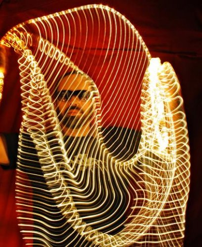

Adam Franklin (Interview)
As if reforming one of the most criminally underrated bands of the 90’s wasn’t enough, Swervedriver frontman Adam Franklin managed to find sufficient time in 2008 to collaborate with Interpol drummer Sam Fogarino on the Magnetic Morning debut A.M., and release one cracking single under his given name, a stunning cover of Wolf Parade’s Shine A Light. That’s a busy year, by anyone’s standards. 2009 promises to be just as hectic for Franklin, however, with the release of his second solo album, Spent Bullets, through Second Motion / Hi-Speed Soul later this month.
I caught up with him earlier in the month to discuss the new record, his impressive level of productivity, and, of course, the future of Swervedriver.
No Ripcord: I'm intrigued by the title of your new album, Spent Bullets. Where did this come from and how does it tie in with the record itself?
Adam Franklin: It might be another kind of art-versus-commerce statement. Some of us keep walking forward within this music industry that's supposedly on it's knees, investing our time and money in the next project and wondering if it's time and money well spent – fortunately you can record and release for a lot less than you used to, these days. But if the album is a gun and the songs are bullets, well, they might just go straight to your heart but whether they will be hits in the commercial sense – I'm not holding my breath!
But I've never thought of it as an industry really, it's all about music. Spent Bullets is also the name of Elliott Smith's publishing company and appears on the sleeve of every one of his albums. Elliott Smith was to me probably the major talent of the last ten years and if this reminds people to go listen to his records, then I'm happy to be the one to remind them.
Spent Bullets immediately sounds like a cohesive, carefully considered record. Have your other commitments with Swervedriver and Magnetic Morning made you focus closely on the kind of music you'd like to release under your own?
Well it was still a case of getting as many songs down before running out of time and from a list of maybe 18 or so I did consider which ones should be amongst the first ten committed to tape, so that was considered! You never really know which ones are gonna make the cut though. And there is a cohesion from it all being recorded in one session – well, it was all done in four sessions actually, but those were drums session, guitars & vocals, mix and master etc – so there is an overall unity of sound.
I guess that when you have more than project on the go at the same time you do have to think about what differentiates one from the other. Largely that's gonna be determined by the different players in each line-up but there is still the process at the songwriting stage where you have to think "well, this song seems to be right for this project". Locksley Taylor who plays in my solo Bolts of Melody band was kinda gutted when he heard the song Indian Summer, which he knew was intended as a Magnetic Morning song – he was suggesting all sorts of trade-offs, two other lesser songs in exchange for that one! And I was tweaking that song on the Swervedriver tour bus as well. But that song was written with that band in mind from the start - it was in fact partly inspired by Sam Fogarino's chord sequence for DontGoToDreamstate.
Bolts of Melody featured a handful of straight up rock tracks like Seize the Day and Shining Somewhere, but Spent Bullets seems to lean more towards the psychedelic end of your songwriting spectrum. The opening track Surge sounds like it might have been written as a more conventional rocker, but the end result sounds richer and much more in keeping with the rest of the album. Did you write the songs for Spent Bullets with this kind of psychedelic sound in mind, or was it something you decided to move towards in the recording phase?
I would say that the psychedelic-ness is just a continuation from Bolts of Melody which had songs such as Morning Rain, Theme from LSD, Ramonesland etc. that all have these sounds lurking in the corners of the mix. It's all a continuation from Swervedriver as well really. I find that one thing I tend to do is get the structure of the song in place on the demo recording, but then leave the top layer of electric guitar ideas to the very last minute in the studio. So for example on Surge, I didn't really have any idea what I was gonna play until the time came to record something – at least as far as the crazier top line guitar is concerned. Likewise with Big Sur, the demo of which didn't even have electric guitar on which meant that I wasn't trying to recreate anything and could just let rip with something on the spur of the moment.
While there are a lot of great mellow guitar sounds on the album, I'm really impressed by Champs in particular. While the tone seems to be a touch darker, I'm struggling to make out the lyrics, which are quite low in the mix. What's the story behind this song?
Well, I can tell you that the original demo of this was quite different and sounded like a Serge Gainsbourg-type 60s theme-tune thing. I even wrote some French lyrics and recorded this spoken-word vocal, slowing the tape down to make myself sound more 'exotic'! I actually sounded more like the Arsenal football manager Arsene Wenger than Serge but anyway... So because it was my French tune, the working title was Champs Elysees and then after the refit and newly-Anglicised lyrics I decided that Champs sounded cool as the newly-Anglicised title. Lyrically it's kind of love-gone-wrong-in-space: "You don't wanna wear my constellations/It seems that the stars have long gone from your eyes/I don't wanna be an astronaut/I just wanna be a happy man".
Another of my favourites is the track titled Bolts of Melody. Is this a reflection on the themes of the last album, a song that's left over from the Bolts sessions, or did you simply like the name?
Yeah, this was a song that was completed shortly after the last album and then Bolts of Melody seemed like the perfect title for it. We were actually playing this song on the Bolts of Melody tour and I was announcing it as the song Bolts that didn't make it onto the album Bolts. It's kinda like how The Doors had an album called Waiting For The Sun and then the next album actually contained a song called that, which I kinda liked. I might have to write a song called Spent Bullets now.
Both of your solo records feature a diverse range of guitar effects and there are some really vintage psychedelic sounds. Do you still work with traditional effects pedals, or have you moved on to computer-generated effects nowadays? Also, how much of a challenge is it to replicate the intricate guitar work of the recorded songs in the live arena?
Computer-generated effects? Jesus, no. The pedals we use in the studio are slightly more exotic than the ones out on the road but there are no plug-ins being used on the guitars. There's the Vox Cry Baby; perhaps a Roger Mayer pedal or an Elektro-Harmonics but then a bunch of Boss pedals, some of which have been modified. I don't know if they would be considered vintage or traditional but I use them sparingly anyway really – pedals actually have more 'effect' if you don't overdo it. Live is always a whole different thing – you have the sheer volume at a show so you can just hit 'em over the head with that and they won't miss the subtleties of the recordings!
The reports I've read – and the array of YouTube videos I've watched with jealousy! – suggest that last year's reunion shows were an amazing success. Do you have any current plans to tour again? I'm guessing everyone has their own commitments outside of Swervedriver, but would this be something that you personally would be interested in?
Absolutely. But you're right, everyone has other commitments that don't necessarily dovetail - the shows were great though and the band really did sound better than ever. The rehearsals were great – we tried a few songs out that we didn't end up performing live and so it was great playing songs such as Flawed which was a b-side from the Vines/Bonnar line-up that Steve and Jez had never played before. But there were so many songs that we pretty much had to play each night that tunes such as Flawed and Hands didn't get a look-in in the end.
I was gutted to miss the UK shows with work commitments preventing me from making the trips from Sheffield. Obviously the tour was heavily weighted towards the US – was that a conscious decision, or was it simply a case of that being where the interest from promoters/venues was?
That was essentially where the interest was and where promoters felt they could make x amount and therefore afford to pay us the x amount we required to make it profitable. There were offers for other UK and European shows that unfortunately wouldn't have made sense logistically or financially. Likewise with Australia and South America – there have been some interesting offers though and I'd love for us to take the band out again.
The last few years have seen a lot of seminal bands re-forming, although I'm struggling to any, perhaps with the exceptions of Mission of Burma and Dinosaur Jr, who have recorded an album that stands alongside their 'classic' work. Have you thought about what a fifth Swervedriver album would sound like? Have you written songs, or even riffs, that you think could develop into potential Swervedriver material?
Not really. There are a couple of titles; there's what would be an unexpected cover version and maybe one or two actual rocking tunes that could be Swervedriver songs – me and some friends recorded a song called I'll Be Yr Mechanic at Sear Sound in NYC a few years ago that sounded quite 'driveresque although it didn't have any vocals or words beyond the title.
Swervedriver continues to have an intensely dedicated following and so many people seem to be committed to preserving the band's legacy. Does the continuing level of support/interest surprise you? And how important is the matter of legacy to you?
When you think about it, it means a hell of a lot actually and I think all the band members will say the same thing because they're also just as passionate about it now as before. The passing of time reveals all in a way and allows you to step out of the original timeframe and to have people all over the world still love the band 20 years after it formed is vindication for the band against the naysayers at the time also.
A few years ago I found myself at a pub quiz in London and on the same team as the NME journalist who gave the last Swervedriver album a snide-y review and 5 out of 10. In the review he had said something snotty about "you can always tell a failed band who are trying to pretend they haven't been dropped by their label by sticking to their guns and releasing their album on their own label instead".
Even in 1999 it was a pretty out-of-touch attitude to be looking down from your ivory tower like that and ten years later it's laughable! We certainly stuck to our guns while the NME hardly flies off the shelves these days!
Moving on to Magnetic Morning... This sounded like a dream project right from the off. How did the band come to be, and what plans do you have for the future?
Sam had worked on an Interpol remix with Bob Mould and the conversation got on to Swervedriver, who Bob used to come and see when we toured in the US. Sam then happened to mention in an interview that he wouldn't mind working with me and we ended up being introduced by a mutual friend. We've only released and toured the album in the US so far but we've just been looking at licensing the album in Japan and Europe and would really like to tour those places as well.
How do you differentiate Magnetic Morning from your solo work and Swervedriver? Is there something specific you're aiming for with Sam?
Well again, there are the individual taste aesthetics that we both bring to the whole sound as well as how the guys in the band play it – the live band sounds colossal! Material-wise it was completely open-ended when we started and we began by working on a couple of ideas that Sam had, which made total sense because, you know, I already have this outlet for my songs and was much more interested in seeing where I could help steer Sam's ideas. And then over time this whole sound and style emerged like treasures dredged from the ocean floor!
What music is inspiring you at the moment?
Scott Walker is who I've been listening to most over the last 18 months or so and a number of the A.M. and Spent Bullets songs owe a subtle and sometimes less-than-subtle debt to Scott. It's Art Dad by The Clientele, is a great album – previously unreleased and mainly demo recordings from 1991-96 of a band that I was unaware of until about 2000.
Which song/record in your career are you most proud of?
Record-wise, at the moment it would have to be both A.M. and Spent Bullets. Song-wise Son Of Mustang Ford is pretty good – that song blew us all away on the recent tour. Duel might be the most definitive Swervedriver recording though.
A number of great bands have reformed recently, with varying success. Which reunion were you most excited about and why? Also, is there another band you'd love to see take to the stage for one more tour?
The Stooges was the one, and it's even more poignant now that Ron Asheton has passed away. Iggy had carried on performing and recording regularly over the years but it felt especially good for the Asheton brothers – that was vindication for them! And in front of real appreciative crowds as well – who gives a crap about them being 'nominated for induction' to the Rock 'n' Roll Hall of Fame? As if The Stooges need 'nominating' for some music industry awards ceremony! Their performance at Randall's Island in New York in 2004 was just phenomenal.
26 March, 2009 - 13:26 — David Coleman